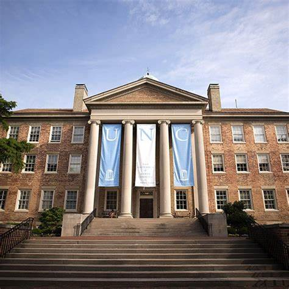

Kenan Science Library

Kenan Science Library
Location: Science & Engineering Quad
Hours:
Mon–Thu: 8 am–10 pm
Fri: 8 am–5 pm
Sat: Closed
Sun: 2 pm–10 pm
Special Aspects:
STEM journals, Tech lending, 24-hour study lab